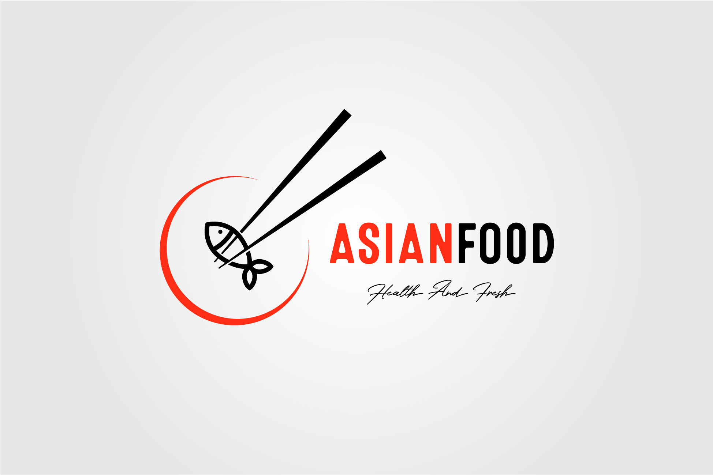
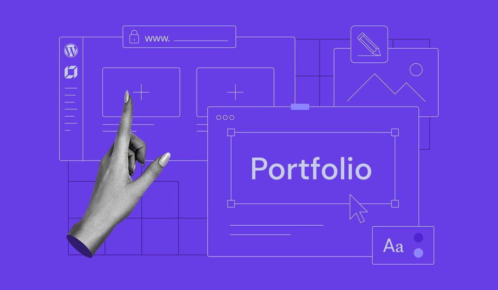
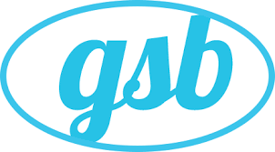
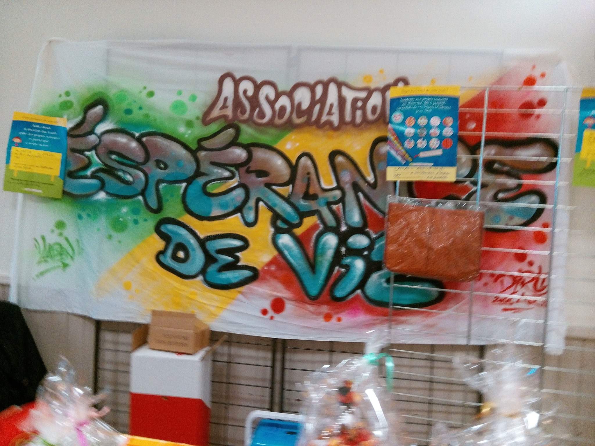
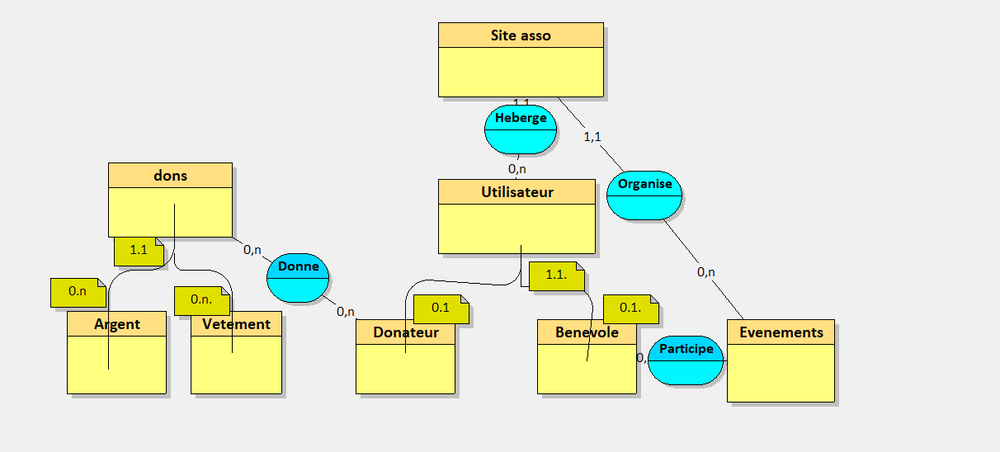
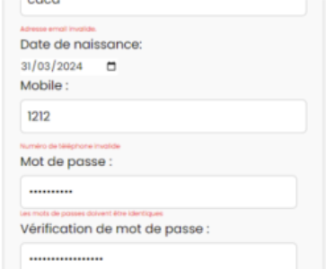

Education
2023-2024
Lycée Voillaume
BTS SIO
SLAM 2ème année
2022 - 2023
Lycée Voillaume
BTS SIO
SLAM 1ère année
2019 - 2020
Lycée Jean Jaurès
Baccalauréat
Economique et Sociale
BTS SIO
Qu’est-ce qu’un BTS SIO?
Le BTS SIO (Services Informatiques aux Organisations) remplace le BTS Informatique de Gestion (niveau BAC+2) depuis l’année 2011.
Ce diplôme a pour objectif de former l’étudiant à la mise en place de services informatiques en tant que salarié au sein des organisations (entreprises, administrations, PME, PMI, etc…) soit en tant que consultant d’une SSII (société de services d’ingénierie informatique), d’une société éditrice de logiciels ou d’une société de conseils…
Les services informatiques concernent les solutions techniques d’infrastructures, les applications logicielles, la maintenance, l’évolution de ces solutions ainsi que le respect des normes de sécurité et des bonnes pratiques …ect.
Le BTS SIO propose deux spécialités :
Option SISR
L’option Solution d’infrastructure, systèmes et réseaux forme des professionnels des réseaux et équipements informatiques (installation, maintenance, et sécurité du réseau d'un système d'information).
Option SLAM
L’option Solutions logicielles et applications métiers forme des spécialistes des logiciels (rédaction d’un cahier des charges, formulation des besoins et spécifications, développement, intégration au sein de la société).
Missions
PREMIERE ANNEE DE BTS SIO
ASIANFOOD
AsianFood est une chaine de restaurant, préparant de la nourriture asiatique.
Le but de cette mission était de crée une application pouvant gérer les stocks du restaurant et de pouvoir commander du stock.
PORTFOLIO
Dans le cadre de l'épreuve E4, j'ai développer un portfolio pour présenter mon parcours professionnel et les compétences que j'ai acquis
DEUXIEME ANNEE DE BTS SIO
"GSB"
Le laboratoire GSB est issu de la fusion entre le géant américain Galaxy (spécialisé dans le secteur des maladies virales dont le SIDA et les hépatites) et le conglomérat européen Swiss Bourdin (travaillant sur des médicaments plus conventionnels), lui-même déjà union de trois petits laboratoires.
GSB 1 (PHP)

Ma mission à consister en la réalisation d’un formulaire permettant d’enregistrer les frais du visiteur en PHP mode MVC.
GSB 2 (Laravel)
Notre mission d'équipe à consister en la réalisation d’un espace gestion des frais de remboursement en laravel.
Pour ma part, j’ai développé la partie du suivi de remboursement des frais d’un visiteur par mois, et de l’exportation de tous les suivi au format JSON.
GSB 3 (Winforms)
Notre mission d'équipe à consister en la réalisation d’un espace de gestion des visiteurs (consulter, ajouter, modifier, supprimer) et de consultation de rapport.
Pour ma part, j’ai développé la partie du suivi de gestion des visiteurs.
Experience professionnelle
STAGE DE PREMIERE ANNEE
Fonctionnalités
Mon stage de première année a consisté en commençant a crée un site internet avec mes camarades pour l'association humanitaire "Espérance de Vie" qui sera terminé lors du deuxième stage.
EN SAVOIR PLUSSTAGE DE DEUXIEME ANNEE
Espérance de vie 1
En stage de deuxième année de BTS SIO a consisté en la création d’un site internet d'une association ...
EN SAVOIR PLUSEspérance de vie 2
Après avoir défini la structure du site j'ai du sécurisé le site ...
EN SAVOIR PLUSCompétences

HTML 5
HTML, acronyme de HyperText Markup Language, est le langage de balisage standard utilisé pour créer et structurer des pages Web.

css
CSS, acronyme de Cascading Style Sheets, est un langage de feuilles de style utilisé pour contrôler la présentation visuelle des pages Web écrites en HTML et XML

PHP
PHP, acronyme de "Hypertext Preprocessor", est un langage de programmation open source principalement utilisé pour le développement Web.
Il est souvent intégré dans des pages HTML pour générer du contenu dynamique.

SQL
SQL, acronyme de "Structured Query Language", est un langage de programmation utilisé pour communiquer avec et gérer des bases de données relationnelles. Il offre une syntaxe standardisée pour exécuter des opérations telles que la création, la modification, la suppression et la récupération de données à partir de bases de données.

UML
UML, acronyme de "Unified Modeling Language" (langage de modélisation unifié), est un langage visuel utilisé pour représenter et communiquer des concepts et des structures dans le développement logiciel.

PYTHON
Python est un langage de programmation polyvalent, interprété et de haut niveau.
Il se caractérise par une syntaxe claire et concise, ce qui en fait un choix populaire pour les débutants en programmation ainsi que pour les développeurs expérimentés.

CSHARP
C# (prononcé "C sharp") est un langage de programmation développé par Microsoft. Il est utilisé principalement pour le développement d'applications sur la plateforme Microsoft .NET. C# est un langage orienté objet, offrant une syntaxe simple et expressive qui le rend facile à apprendre et à utiliser.

VISUAL STUDIO
Visual Studio est un environnement de développement intégré (IDE) développé par Microsoft.
Il fournit un ensemble d'outils puissants pour la création, le débogage et le déploiement d'applications logicielles pour diverses plateformes, y compris les applications de bureau, les applications Web, les applications mobiles et les jeux vidéo.

VISUAL STUDIO CODE
Visual Studio Code (VS Code) est un éditeur de code source léger, gratuit et open-source développé par Microsoft.
Contrairement à l'IDE Visual Studio complet, VS Code se concentre sur la simplicité et la productivité de l'édition de code pour divers langages de programmation et plateformes.

GITHUB
GitHub est une plateforme de développement collaboratif basée sur le cloud, principalement utilisée pour l'hébergement de code source.
Elle offre une multitude de fonctionnalités pour faciliter le développement logiciel en équipe, la collaboration, la gestion de projet et le suivi des problèmes.

GOOGLE DRIVE
Google Drive est un service de stockage en ligne proposé par Google.
Il permet aux utilisateurs de stocker des fichiers dans le cloud, d'y accéder à partir de n'importe quel appareil connecté à Internet et de partager facilement des fichiers et des dossiers avec d'autres utilisateurs.

XML
XML, acronyme de "Extensible Markup Language", est un langage de balisage utilisé pour structurer et organiser des données de manière lisible à la fois par les humains et les machines.
Contrairement à HTML qui est conçu pour la présentation de contenu, XML est utilisé pour représenter les données de manière significative et indépendante de toute application particulière.
Veilles technologiques
Qu'est ce qu'une veille technologique?
La veille technologique est une activité consistant à se tenir informé des innovations dans un secteur determiné.
Pour ma part, je me suis concentré sur la cyber-sécurité un domaine qui m'intéresse et qui fait l'objet de nombreuses discussions.
Même parmi les personnes n'étudiant pas le développement cela peut être plus ou moins facilement compréhensible en illustrant avec des exemples récent. Je l'ai réalisé grace aux newsletters tel que Feedly un agrégateur de flux RSS et Google Alerts ou CERT-FR me permettant de recevoir des articles sur les sujets qui m'ont intéressé . En plus des informations fournis chaque semaine/mois, j'ai quelque sites en favoris permettant de me tenir au courant des dernières actualités tel que ZDNet ou Les Numériques qui est un site internet regroupant l'actualité High Tech.
Méthode push
Méthode pull
Projet professionnel
Je me suis récemment certifié en HTML CSS PHP SQL auprès d'OpenClassrooms. Cette expérience m'a convaincu de poursuivre une carrière dans le domaine du front, d'où ma recherche actuelle d'un contrat d'alternance en developpement front.
J'ai acquis ces compétences grâce à mes études, mes recherches, ma veille technologique et mes certifications.
Bien que je n'ai pas encore travaillé dans la cybersécurité, un projet professionnel dans la cyber sécurité m'intéresse aussi.
Contact
Je suis joignable via le formulaire de contact ci-dessous. N’hésiter surtout pas à me contacter si vous avez des questions.